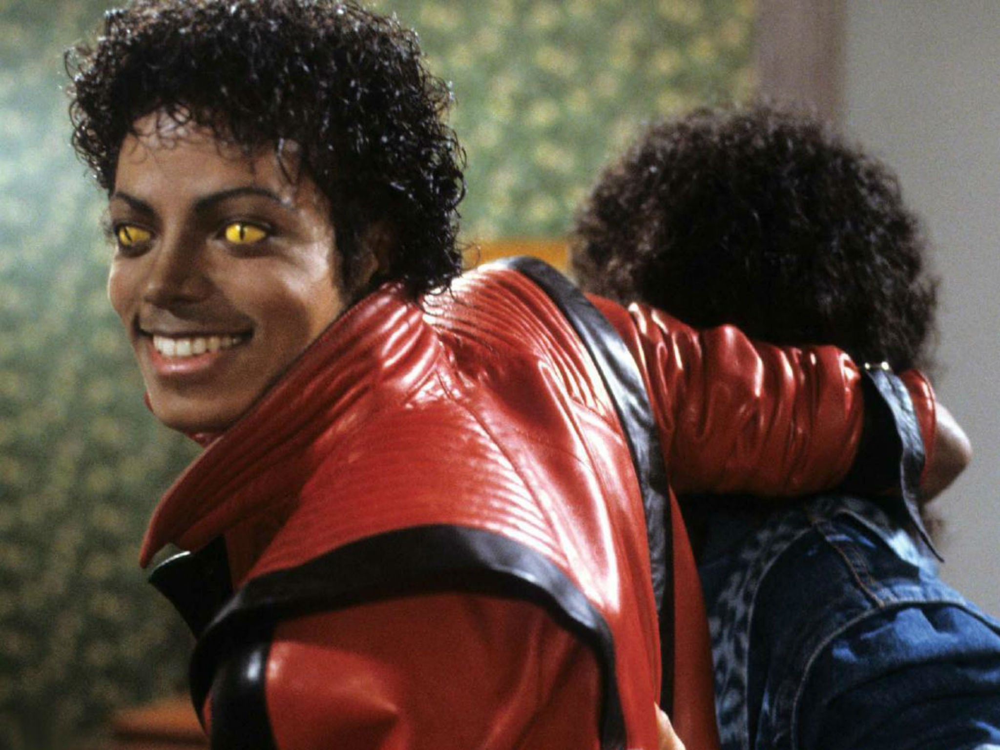

"Thriller" is a single by American singer Michael Jackson. It was released as a single by Epic Records on January 23, 1984 as the seventh and final single from Jackson's sixth studio album of the same name.[1] "Thriller" is a mix of disco and funk. The song was produced by Quincy Jones and was written by Rod Temperton who wanted to write a theatrical song to suit Jackson's love of film. The music and lyrics evoke horror films, with sound effects such as thunder, footsteps and wind. It ends with a spoken-word sequence performed by horror actor Vincent Price.

"Monster Mash" is a 1962 novelty song by Bobby "Boris" Pickett. The song was released as a single on Gary S. Paxton's Garpax Records label in August 1962 along with a full-length LP called The Original Monster Mash, which contained several other monster-themed tunes. The "Monster Mash" single was number one on the Billboard Hot 100 chart on October 20–27 of that year, just before Halloween. It has been a perennial Halloween favorite ever since..